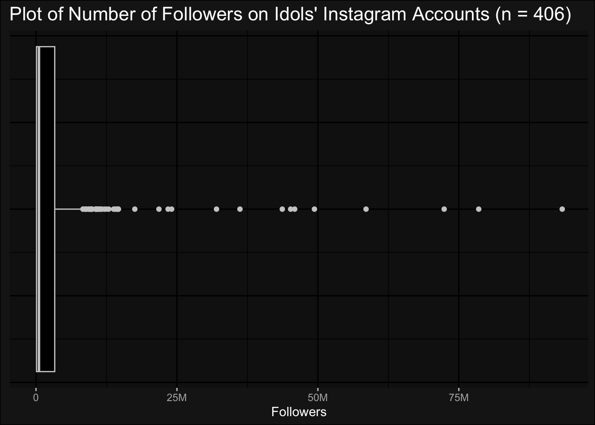
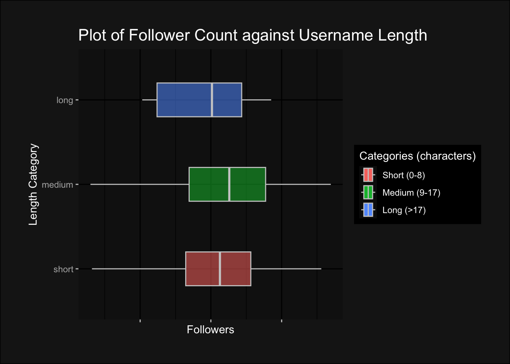

What’s in a (user)name?
A two-part analysis of K-pop idols’ Instagram follower counts and a derivative interactive app.

The key metric for an idol’s success is most often thought to be their fame. Where Instagram has become a hotspot for K-pop idols to communicate with fans, show off their brand sponsorships. and express themselves, follower counts have also become a quick way to quantify idols’ fame, and give an estimate of their popularity.
But, how exactly do idols gain followers through their profiles?
My question is as such: What is the optimal Instagram profile for a K-pop idol to achieve the most number of followers?
Arguably, the most important part of an Instagram profile is the username.
The maximum length of an Instagram username is 30 characters, within which one has the flexibility to put any letters, digits, and combinations of underscores and periods.
I want to study how K-pop idols have made use of these restrictions to create their usernames, and from that, how the designs of their usernames might have affected their follower counts, alongside the influence of external factors, like gender, age, and years in the industry.
I will ultimately deduce what characteristics are more likely to attract higher numbers of followers, and create a web app that lets one create a fake idol profile and generate an predicted amount of followers.
Dataset used
“Kpop Idol Instagram Followers” retrieved from: Faisal Amir on Kaggle
Let us first examine our independent variable, the number of followers, before exploring the dependent variables:
As observed, we have a relatively small sample size in comparison to the large range of followers. For ease of visuals while plotting graphs and because comparisons of number of followers, rather than their individual counts, are more important in my analysis, much of my graphs will be on the logarithmic log2 scale without numbered axes.
Now, moving on the dependent variables, I have elected to split them into two categories: username-based or idol-based.
Username-based (Characteristics of a username):
Length (in characters)
Presence of and number of special symbols (periods (“.”), underscores(“_”), or both)
Presence of and number of digits
Verification-related words: “official”
Identity-related words: inclusion of group name or stage name
Idol-based (Personal characteristics):
Gender
Age
Career length (in years)
Nationality
Company reputation
Optimising a Username
Length
An easy differentiating factor between usernames is their length. According to the categorisations of our data, medium length usernames between 8 to 17 characters long have the highest median follower count.

Digits and Special Characters
Naturally, the contents of the username play an important role as well. Numbers and punctuation marks are often used to stylize the username, add personality, or to differentiate the username from already occupied handles.